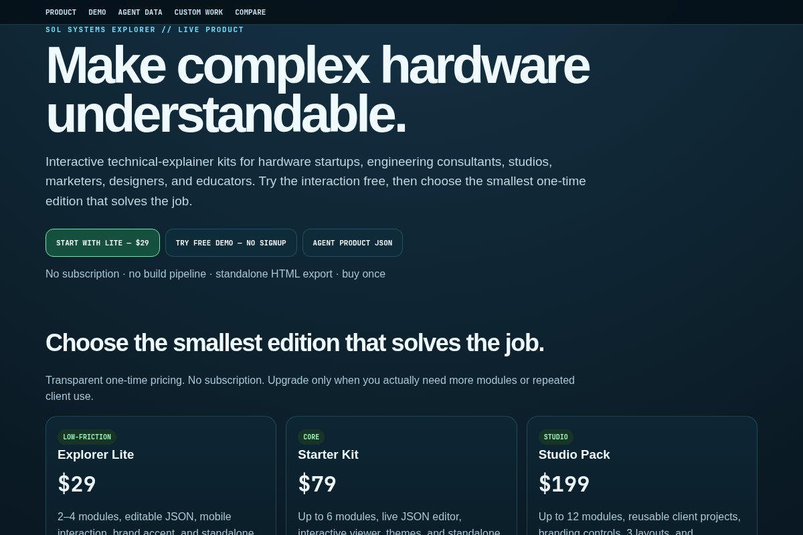

Let someone inspect the system instead of making them decode the slide.
Use SOL Systems Explorer when you have an approved hardware architecture or subsystem story and want a lightweight interactive companion for a website, pitch, QR code, or demo.
TRY SAMPLE INTERACTIONSTART AT $29
Good fit.
Investor explanation
Expose the main modules and their roles without burying a non-specialist in engineering detail.
Customer education
Give sales prospects a self-directed system overview they can revisit after a presentation.
Trade show QR
Publish a portable HTML explainer alongside video, renders, or a physical prototype.
Use approved claims only.
The template helps present technical information; it does not validate it. Product teams remain responsible for engineering accuracy, source approval, regulatory claims, and safety-critical decisions.
Small architecture? Lite. Broader product story? Starter.
Lite handles 2–4 modules for $29. Starter handles a larger general-purpose explainer for $79. Custom Concept Explorer work is available when you want us to build the experience.
LITE — $29STARTER — $79COMPARE